Voorstel · ronde 4
Lettertype voor boordcomputer en webapp
Jouw 11 favorieten uit ronde 3 (groen gemarkeerd: "jouw keuze") plus 19 nieuwe in dezelfde richtingen (oranje: "nieuw"). Nieuw is onder meer Eurofurence, het eenvoudige, ronde "Euro"-lettertype. Bovenaan alles groot onder elkaar, met de naam in het rood; onderaan staat het huidige lettertype ter vergelijking.
Vergelijking


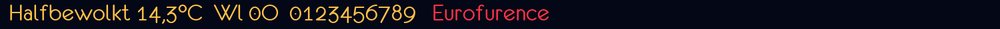


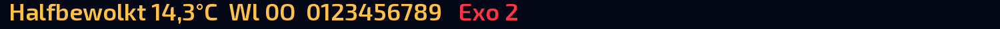
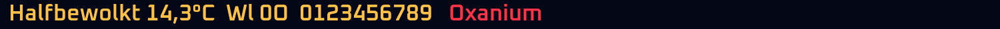
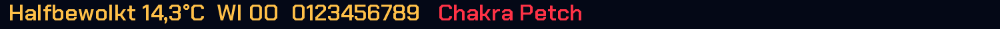


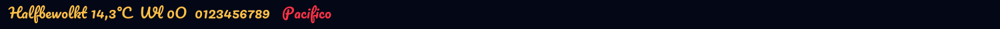


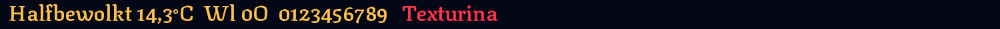
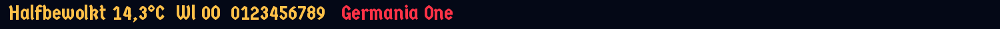

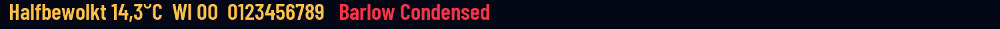

Goed leesbaar
Rustige letters voor dagelijks gebruik.
Atkinson Hyperlegible
jouw keuzeGemaakt voor slechtziende lezers; nul met streep, l met staartje.


Lexend
jouw keuzeBreed en ontworpen voor leesgemak.


Lexend Exa
nieuwLexend in een nog bredere, ruimere uitvoering.


Nunito
nieuwRond afgewerkt, vriendelijk en stevig.
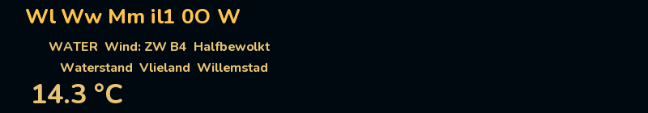
Rond en eenvoudig
Geometrische letters met ronde vormen.
Comfortaa
jouw keuzeRond en zacht, met dunne lijnen.


Eurofurence
nieuwHet "Euro"-lettertype: geometrisch, rond en heel eenvoudig (vrij, OFL).
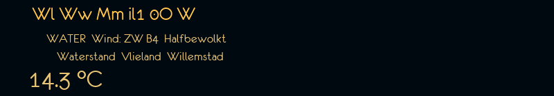
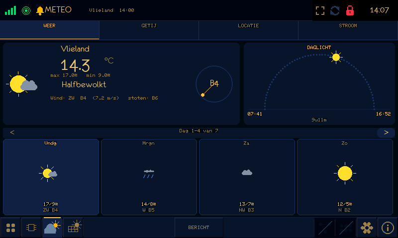
Eurofurence Bold
nieuwDezelfde letter in vet: beter leesbaar op het scherm.
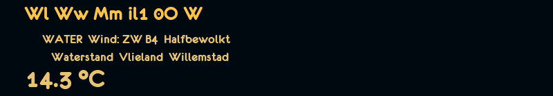
Quicksand
nieuwRond en licht, vergelijkbaar met Comfortaa maar wat strakker.


Strak en technisch
In de geest van Eurostile en de belettering van je boot.
Michroma
jouw keuzeHet dichtst bij Eurostile Extended.


Orbitron
jouw keuzeHoekig en futuristisch, nul met streep.


Exo 2
nieuwTechnisch maar goed leesbaar; tussen Orbitron en Lexend in.
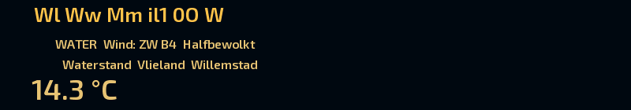
Oxanium
nieuwAfgeschuinde hoeken, Eurostile-achtig.
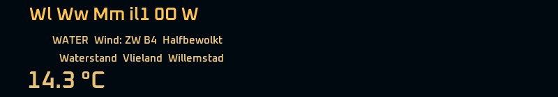
Russo One
nieuwVet en vierkant, sterk voor titels.


Chakra Petch
nieuwStrak en hoekig met schuine afsnijdingen.
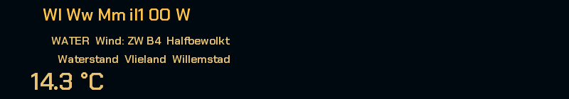
Klassiek (schreef)
Letters met schreefjes.
Zilla Slab
jouw keuzeBlokschreef: klassiek maar stevig.


Roboto Slab
nieuwRustige blokschreef, goed leesbaar.
Arvo
nieuwGeometrische blokschreef, vet.
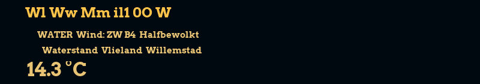
Sierlijk
Handschrift-achtig; mooi voor titels.
Dancing Script
jouw keuzeVrolijk, vloeiend handschrift.


Great Vibes
jouw keuzeZeer sierlijk; op schermformaat erg fijn.


Pacifico
nieuwVet, speels handschrift; leest beter op klein formaat.


Allura
nieuwElegant, in de lijn van Great Vibes maar wat opener.


Parisienne
nieuwKlassiek sierschrift.
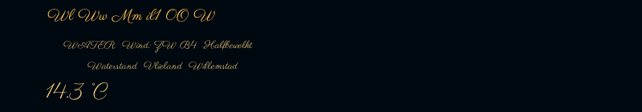
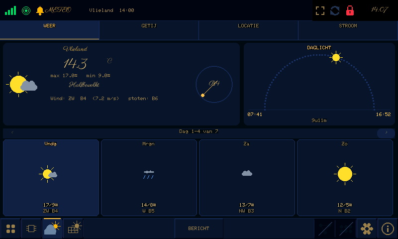
Gotisch
Breekletters.
Grenze Gotisch
jouw keuzeGotisch met een moderne, vette uitvoering.


UnifrakturMaguntia
jouw keuzeEchte fraktur.


Texturina
nieuwGotisch geïnspireerd, maar heel goed te lezen.


Germania One
nieuwGotisch in een smalle, stevige uitvoering.


Fruktur
nieuwSpeelse, vette fraktur.
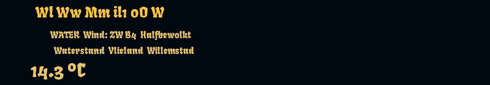
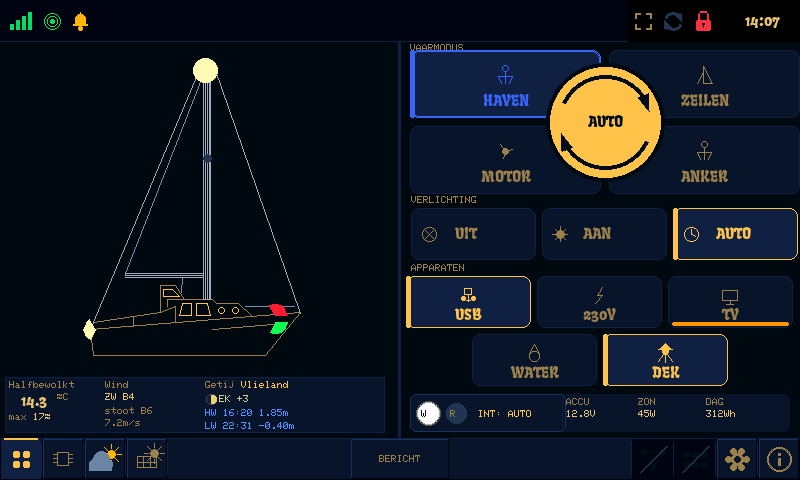
Smal
Hoog en smal, zoals een krantenkop.
Oswald
jouw keuzeSmal en hoog.


Barlow Condensed
nieuwSmal, iets rustiger dan Oswald.
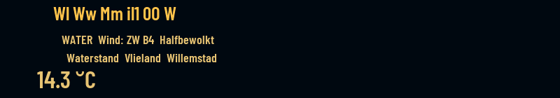
Anton
nieuwExtra smal en vet, echt een kopletter.
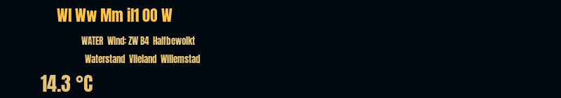